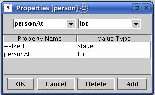
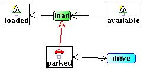

Informal Semantics of Life History Diagrams
States
A state is defined by a label name and is associated with an object
type which we call a sort. These are determined at creation
time. State labels must be unique throughout the diagram.
The state name and sort are used to define right and left hand
sides to an Ocl state transition
and define a one place predicate of the form
<state name >(<object sort>).
Additional arguments to this predicate which we will call the state
predicate may be added by other diagram features.
The
state node
which has the defined object sort
person will generate the predicate definition tired(person)
Properties
Properties are added to individual state nodes on the diagram but apply
to all state nodes having the same
object sort. A property defines a property name, which must be unique
to the current object sort, and
a property value which may be shared by properties from distinct sorts.
The property value itself
defines an object sort. This object sort may be static,
the norm, or may be dynamic, in which case it will be the name of an
object type depicted on the life history diagram. Each property
defines a two place predicate of the form
<property name>(<object sort>,<value sort>).
We will refer to this as a property predicate. A state
definition clause is formed from
the state predicate and a conjunction of all property predicates
applying to the object sort. The properties referring to the object
sort person

will produce the following state definition clause for the tired
state.
[tired(Person),personAt(Person,Loc),walked(Person,Stage)]
Transitions
Transitions are identified by label names. Transition label names are
associated with operator names and may
be shared with other transition nodes as long as the transitions all
refer to the same action and that the
transition nodes are connected by either a single headed red arrow or a
double headed red arrow. The effect of
connecting transition nodes with red arrows is explained below. The
black connecting arrows connect transition
nodes to state nodes, one as source and one as target. There can only
be two such connections. The transition
node in conjunction with its connecting state nodes form part of an
operator definition such that the operator
will have the transition label name and the body of the operator will
have a necessary state change clause
with the source state definition clause forming the left hand side and
the target state definition clause forming
the right hand side.
The transition
will generate the following operator specification
operator(sleep(Person,Stage,Loc),
% prevail
[],
% necessary
[ sc(person,Person,[tired(Person),walked(Person,Stage),personAt(Person,Loc)]=>
[fit(Person),walked(Person,Stage),personAt(Person,Loc)])],
% conditional
[]).
Translated to PDDL this would be
(:action sleep
:parameters ( ?person - person ?stage - stage ?loc - loc)
:precondition (and
(tired ?person)
(walked ?person ?stage)
(personAt ?person ?loc)
)
:effect (and
(fit ?person)
(not (tired ?person))
) )
Transitions with Property Changes
Transition nodes may have property changing predicates. These define a
constraint name and a constraint value sort. The constraint
name will define a two place predicate that is normally static that
limits the range of property value changes. The predicate has the form
<constraint name>(<constraint value sort>,<constraint
value sort>).
The actual instances of the constraint predicate are defined outside
the Life History editor in the Static Invariants Editor. If the
is no constraint on how the property values may change then the
distinguished constraint name "none" is used. In the an example of a
domain with a state car having a property carAt
and property value sort loc as shown in
and the constraint as defined in
the property change dialog the constraint predicate will be added to
the left hand side of the state transition clause within the operator
with appropriate variable bindings, giving the operator below.
operator(drive(Car,LocA,LocB),
% prevail
[],
% necessary
[ sc(car,Car,[car(Car),carAt(Car,LocA),next(LocA,LocB)]=>[car(Car),carAt(Car,LocB)])],
% conditional
[]).
In PDDL this is
(:action drive
:parameters ( ?car - car ?locA - loc ?locB - loc)
:precondition (and
(parked ?car)
(carAt ?car ?locA)
(next ?locA ?locB)
)
:effect (and
(carAt ?car ?locB)
(not (carAt ?car ?locA))
) )
When no constraint is placed on the property change
no static constraint predicate is created. The resulting operators are
defined as follows.
operator(drive(Car,LocA,LocB),
% prevail
[],
% necessary
[ sc(car,Car,[parked(Car),carAt(Car,LocA)]=>[parked(Car),carAt(Car,LocB)])],
% conditional
[]).
In PDDL
(:action drive
:parameters ( ?car - car ?locA - loc ?locB - loc)
:precondition (and
(parked ?car)
(carAt ?car ?locA)
)
:effect (and
(carAt ?car ?locB)
(not (carAt ?car ?locA))
) )
Coordination Connections
The coordination between the transition diagrams belonging to discreet sorts
is shown in the
Life History Diagrams by red arrows connecting elements from the
distinct transition diagrams. The coordination can be further modified
constraints specified as properties of the connecting arrows.
These properties are specified in the popup dialogs defined for the
connection.
Prevail Conditions
Prevail conditions are created by single headed red arrows connecting a
state from one sorts
transition diagram, the state forms the source of the arrow, to a
transition node of the other sorts transition diagram. The
meaning of such a connection is that there must be an instance of the
source object sort in the referenced state and it must persist in that
state during the operation specified by the transition that forms the
target of the arrow.
In the diagram

the load operator requires that there be a parked car during the
operation. In Ocl this is defined
in the prevail section of the operator as follows.
operator(load(Car,Loc,Tent),
% prevail
[ se(car,Car,[parked(Car),carAt(Car,Loc)])],
% necessary
[ sc(tent,Tent,[available(Tent)]=>[loaded(Tent)])],
% conditional
[]).
In PDDL this is
(:action load
:parameters ( ?car - car ?loc - loc ?tent - tent)
:precondition (and
(parked ?car)
(carAt ?car ?loc)
(available ?tent)
)
:effect (and
(loaded ?tent)
(not (available ?tent))
) )
As an operator the load operator is not very sensible as
it only requires a car to be somewhere while the tent is loaded but no
association is formed between the car and tent that would guarantee
that in an domain with multiple cars the tent is unloaded from the same
car.
Prevail Constraints with Common Properties
When prevail coordinations are formed when the two object sorts
share properties with the same property value sort the default will be
that the property values must be the same. In the above example if a
property "tentAt" with property value sort "loc" is added to the tent
the following operators are generated:
operator(load(Car,Loc,Tent),
% prevail
[ se(car,Car,[parked(Car),carAt(Car,Loc)])],
% necessary
[ sc(tent,Tent,[available(Tent),tentAt(Tent,Loc)]=>[loaded(Tent),tentAt(Tent,Loc)])],
% conditional
[]).
In this version of load the Loc variable defining
the location of the car and the tent must be the same. In PDDL
this looks as follows:
(:action load
:parameters ( ?car - car ?loc - loc ?tent - tent)
:precondition (and
(parked ?car)
(carAt ?car ?loc)
(available ?tent)
(tentAt ?tent ?loc)
)
:effect (and
(loaded ?tent)
(not (available ?tent))
) )
Prevail Constraints with Associations
A prevail constraint can form an association between the source and
target object sorts that is capable
of enduring through multiple state transitions of the participating
object instances. The creation of an association is depicted by the
presence of a "+" symbol decorating the red arrow. The removal of an
established association is indicated by presence of a "-" symbol
decorating the connecting prevail arrow. Associations are recorded by
the object sort that forms the target of the prevail constraint arrow.
Associations are maintained once formed throughout all transitions of
the target object until such time as a transition is made that removes
the association. Associations are a way of objects remembering
connections. For example in the example discussed above of the tent
"loaded" into a car, when there are multiple cars then the information
of which car the tent is loaded into must be recorded and remembered
through any instances of the "drive" operator until such time as the
tent may be "unloaded" from the car at which point the association is
removed. The creation and removal of the association is shown below:
This produces the pair of Ocl operators "load"
operator(load(Car,Loc,Tent),
% prevail
[ se(car,Car,[parked(Car),carAt(Car,Loc)])],
% necessary
[ sc(tent,Tent,[available(Tent),tentAt(Tent,Loc)]=>
[loaded(Tent,Car),tentAt(Tent,Loc)])],
% conditional
[]).
operator(unload(Car,Loc,Tent),
% prevail
[ se(car,Car,[parked(Car),carAt(Car,Loc)])],
% necessary
[ sc(tent,Tent,[loaded(Tent,Car),tentAt(Tent,Loc)]=>
[available(Tent),tentAt(Tent,Loc)])],
% conditional
[]).
We see in these operators that the state predicate loaded
has an additional variable Car which is instantiated to the
same value as the Car that forms the prevail condition. In PDDL
this translates to:
(:action load
:parameters ( ?car - car ?loc - loc ?tent - tent)
:precondition (and
(parked ?car)
(carAt ?car ?loc)
(available ?tent)
(tentAt ?tent ?loc)
)
:effect (and
(loaded ?tent ?car)
(not (available ?tent))
) )
(:action unload
:parameters ( ?car - car ?loc - loc ?tent - tent)
:precondition (and
(parked ?car)
(carAt ?car ?loc)
(loaded ?tent ?car)
(tentAt ?tent ?loc)
)
:effect (and
(available ?tent)
(not (loaded ?tent ?car))
) )
Though not shown in this example if the tent undergoes transition
to other states from the "loaded"
state without traversing the "Unload" transition then each of these
states will also have the additional variable added to the state
predicate.
Necessary Constraints
Necessary constraints are depicted by a form of double headed red arrow
connecting two transition
nodes. The meaning of a necessary constraint is that the state
transitions of both object sorts
must occur together as part of the same operator. The circled
end of the arrow forms the source of the connection and the defined
operator will take on the name of this transition node. In the process
of connecting transition
nodes the name of the source node is propagated to the target node. In
the Hiking domain example the
the connection between the two drive transitions, that of the car and
that of the person indicates that they
both must occur together and is informally the requirement that the car
have a driver. In Ocl
this is shown as follows:
operator(drive(Car,LocA,LocB,Person),
% prevail
[],
% necessary
[sc(car,Car,[parked(Car),carAt(Car,LocA)]=>
[parked(Car),carAt(Car,LocB)]),
sc(person,Person,[inCar(Person,Car),personAt(Person,LocA)]=>
[inCar(Person,Car),personAt(Person,LocB)])],
% conditional
[]).
In this example the property changes referring to the location of
the person and the car were both defined and we see the two transitions
occurring together. In PDDL this is
(:action drive
:parameters ( ?car - car ?locA - loc ?locB - loc ?person - person)
:precondition (and
(parked ?car)
(carAt ?car ?locA)
(inCar ?person ?car)
(personAt ?person ?locA)
)
:effect (and
(carAt ?car ?locB)
(not (carAt ?car ?locA))
(personAt ?person ?locB)
(not (personAt ?person ?locA))
) )
Conditional Constraints
Conditional constraints are depicted by a single headed red arrow
connecting two transition
nodes. The meaning of a conditional constraint is that the state
transitions of the target object sort
must occur together as part of the same operator with the
transition for the source object sort, but that the
source object sort's transition may occur without that of the target's
transition. In this way
a conditional effect of the operator is defined. In the process
of connecting transition
nodes the name of the source node is propagated to the target node. In
the Hiking domain example the
connection between the "drive" transitions of the tent and the car is
conditional. In conjunction
with the property changing constraints of both transitions the
conditional constraint ensures that the tent only changes location when
the car changes location but that the car can make a drive transition
without a tent doing so. In Ocl this is shown by the presence
of the tent's transition in the
conditional section of the operator, as follows:
operator(drive(Car,LocA,LocB),
% prevail
[],
% necessary
[ sc(car,Car,[parked(Car),carAt(Car,LocA)]=>
[parked(Car),carAt(Car,LocB)])],
% conditional
[ sc(tent,Tent,[loaded(Tent,Car),tentAt(Tent,LocA)]=>
[loaded(Tent,Car),tentAt(Tent,LocB)])]).
In PDDL this is
(:action drive
:parameters ( ?car - car ?locA - loc ?locB - loc)
:precondition (and
(parked ?car)
(carAt ?car ?locA)
)
:effect (and
(carAt ?car ?locB)
(not (carAt ?car ?locA))
(forall ( ?tent - tent)
(when
(and
(loaded ?tent ?car)
(tentAt ?tent ?locA))
(and
(tentAt ?tent ?locB)
(not (tentAt ?tent ?locA)))))
) )
Necessary and Conditional Constraints with Associations
Both necessary and conditional constraints may start or end
associations in a manner identical to that of Prevail constraints.
Property Coordination Constraints
In the three types of constraints, Prevail, Necessary and Conditional
the default assumption is that when objects from the source and
destination object sorts share properties with the same value sort then
these values must be
identical when the connected transitions are made. Property
Coordination Constraints allow this default to be changed. The
alternative constraint is defined in the popup associated with the
constraint arrow. This allows you to choose properties from the related
object sorts and define a predicate name to form a constraint on the
allowed
values. Such Property Coordination Constraints though typically will
act on arguments of the same sort need
not do so and could relate argument sorts of diverse sorts. The
Property Constraint popup is shown below:
In this example drawn from the Dock Workers Robots domain the
constraint could be defined relative to the load and unload
transitions requiring that the locations of the container and robot are
adjacent to one another rather than the default of being at the
same location when the transitions are made.
Number Constraints
Number constraints are used to define when more than one instance of an
object, of the same sort is required to make a transition at
the same time. Examples of this occurs in the Hiking domain where
walkers are required to walk the stages of the walk in pairs, each pair
forming a couple. Number constraints are defined in the popup
associated with transition nodes. The popup with the constraint for
couples is shown below:
When a number constraint has been added to a transition node this is
visually indicated by a red border to the transition node. The
constraint "couple" will form an n-placed predicate where n
is the number specified as required to participate in the transition.
In the Hiking domain couple will be a two place predicate where
each argument is of the type of the object sort making the transition,
i.e. person. Instances of the constraint predicate must be
defined in the Atomic Invariants editor. In Ocl the "walk"
operator is defined with two person transitions as below:
operator(walk(Person1,StageA,LocA,LocB,StageB,Person2),
% prevail
[],
% necessary
[sc(person,Person1,[fit(Person1),walked(Person1,StageA),personAt(Person1,LocA),next(LocA,LocB),
nextLeg(StageA,StageB),couple(Person1,Person2)]=>
[tired(Person1),walked(Person1,StageB),pAt(Person1,LocB)]),
sc(person,Person2,[fit(Person2),walked(Person2,StageA),pAt(Person2,LocA),next(LocA,LocB),
nextLeg(StageA,StageB)]=>
[tired(Person2),walked(Person2,StageB),personAt(Person2,LocB)])],
% conditional
[]).
note that the couple predicate occurs in the left hand
side of the first transition. In PDDL this is as follows:
(:action walk
:parameters ( ?personA - person ?stageA - stage ?locA - loc ?locB - loc
?stageB - stage ?personB - person)
:precondition (and
(fit ?personA)
(walked ?personA ?stageA)
(personAt ?personA ?locA)
(couple ?personA ?personB)
(fit ?personB)
(walked ?personB ?stageA)
(personAt ?personB ?locA)
(next ?locA ?locB)
(nextLeg ?stageA ?stageB)
)
:effect (and
(tired ?personA)
(walked ?personA ?stageB)
(personAt ?personA ?locB)
(not (fit ?personA))
(not (walked ?personA ?stageA))
(not (personAt ?personA ?locA))
(tired ?personB)
(walked ?personB ?stageB)
(personAt ?personB ?locB)
(not (fit ?personB))
(not (walked ?personB ?stageA))
(not (personAt ?personB ?locA))
) )
 GIPO
Document Set
GIPO
Document Set